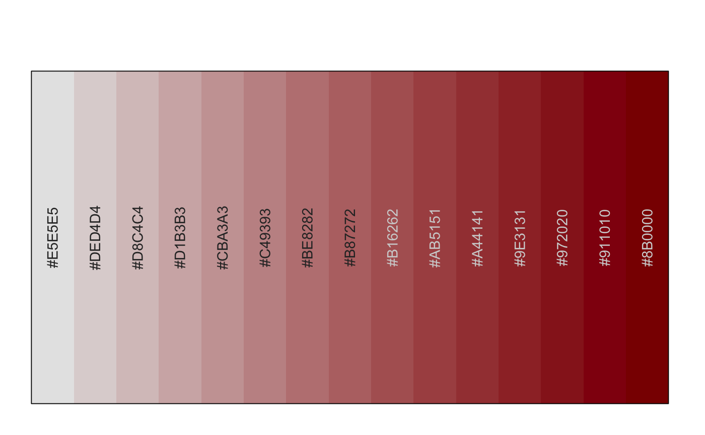
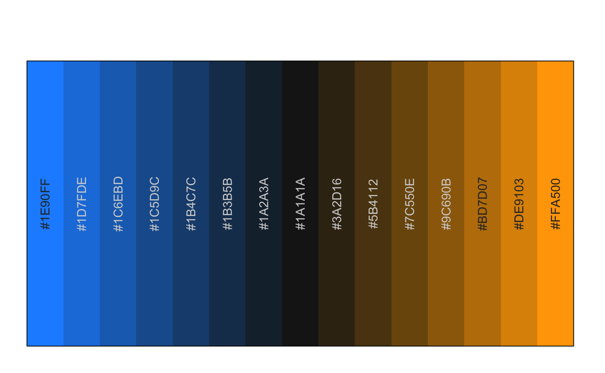
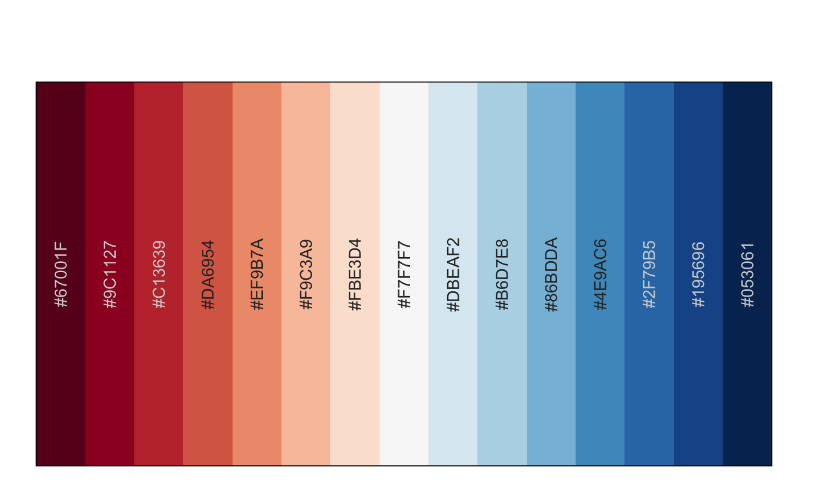
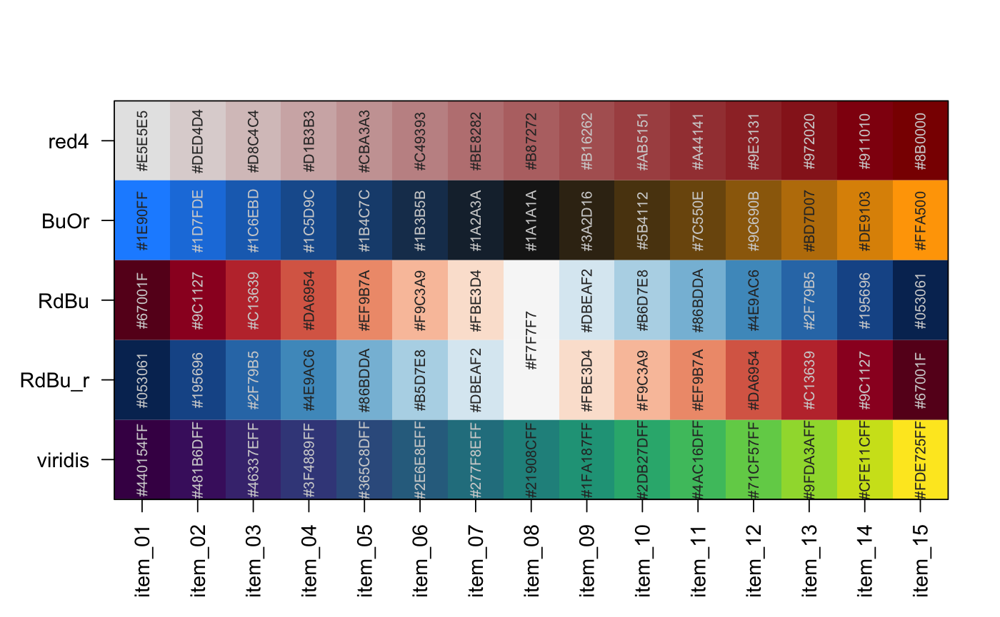

get color ramp by name, color, or function
getColorRamp(col, n = 15, trimRamp = FALSE, verbose = FALSE, defaultBaseColor = "grey90", reverseRamp = FALSE, ...)
| col | accepts:
|
|---|---|
| trimRamp | logical whether to trim off the extreme values of the color ramp, for example to remove the very lightest and very darkest colors. If trimRamp is an integer, then that many colors are removed. |
| verbose | logical whether to print verbose output |
| defaultBaseColor | character vector indicating a color from which to begin a color gradient, only used when col is a single color. |
| reverseRamp | logical indicating whether to reverse the resulting color ramp. This value is ignored when a single value is supplied for col, and where "_r" or "_rev" is detected as a substring at the end of the character value. |
This function accepts a color ramp name, a single color, a vector of colors, or a function names, and returns a simple vector of colors of the appropriate length, suitable as input to a number of plotting functions.
For example, it recognizes RColorBrewer color ramp
names, but can reverse those color ramps with a suffix "_r" at the
end, e.g. "RdBu_r" will supply a color ramp from blue to red, suitable
for heatmaps where red is typically associated with heat and high
numeric values.
colorList <- list(red4=red4, BuOr=BuOr); # If RColorBrewer is available, use a brewer name if (suppressPackageStartupMessages(require(RColorBrewer))) { RdBu <- getColorRamp("RdBu"); RdBu_r <- getColorRamp("RdBu_r"); colorList <- c(colorList, list(RdBu=RdBu, RdBu_r=RdBu_r)); showColors(RdBu); }if (suppressPackageStartupMessages(require(viridis))) { viridisV <- getColorRamp("viridis"); colorList <- c(colorList, list(viridis=viridisV)); } # for fun, put a few color ramps onto one plot showColors(colorList, cexCellnote=0.7);